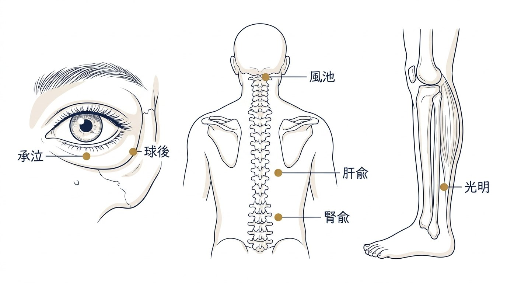

糖尿病網膜症の鍼灸
長期の高血糖で網膜の細血管が傷む合併症です。内科・眼科での標準治療を最優先とし、安定期に主治医許可下で補完ケアを行います。


院長YouTube解説・関連動画
公開日：２０２１年 ２月 １日
更新日：２０２３年 ８月１５日
本日は糖尿病網膜症について解説させていただきます。
☆本記事の内容
- •糖尿病網膜症とは
- •糖尿病網膜症の原因
- •糖尿病網膜症の症状
- •糖尿病網膜症の改善方法
- •糖尿病網膜症のまとめ
- •糖尿病網膜症は、糖尿病の三大合併症の１つ
- •糖尿病網膜症は、長い時間高血糖の状態が続くことが原因で起こる
- •糖尿病網膜症は進行の程度によって３つの時期に分けられる
- •目標は、血糖値と血圧のコントロール
- •糖尿病網膜症は血糖値の管理と病院で調べておくことが大事
銀座そうぜん鍼灸院の宗前です。
このページを書いている私は、鍼灸師として１３年、担当した利用者様数８０，０００人を誇り、病気の休職者３００人を社会復帰できるまで回復させてきた実績があります。
🎥 他のYouTube切り抜き・解説を読む（あと1件）▼
糖尿病網膜症は、糖尿病の三大合併症の１つ
糖尿病網膜症は、糖尿病腎症、糖尿病神経症と並んで、糖尿病の三大合併症の中の１つです。糖尿病網膜症が起きると、視力を失う可能性もあります。
糖尿病網膜症は、網膜が糖尿病の影響で傷むことが原因で起きます。網膜は、カメラで言えばフィルムの役割をしている部分です。毛細血管の傷んだところから水分が漏れると網膜にむくみが起き、毛細血管が傷んで詰まってしまうとその部分の網膜の働きにも障害が起こります。
その結果、見える範囲の中に歪んで見えたりや見えなかったりするところが現れるのです。毛細血管の広い範囲が塞がってしまうと新生血管が生え目の中でたくさん出血したり、網膜を引っ張り網膜剥離を起こしたりすることがあります。
定期的に病院に行くことと早い段階で改善を行うことで病気の進行を抑えることができます。しかし、そのまま放っておくと失明してしまう危険性もあります。
糖尿病網膜症は、日本の失明の原因の代表的な病気で、成人の失明する原因では糖尿病網膜症が高い割合をしめているという報告もあります。
糖尿病網膜症は、病気が進むとともに症状が変化していく病気です。
糖尿病網膜症は、長い時間高血糖の状態が続くことが原因で起こる
糖尿病網膜症は、長い時間高血糖の状態が続くことが原因で起こります。糖尿病網膜症が起こるには、糖尿病にどのくらいの期間かかっているかが関係するのです。
糖尿病は大きく分けて２種類あります。1型糖尿病と2型糖尿病です。1型糖尿病の原因は、自己免疫で、食生活や生活習慣とは関係ありません。１型糖尿病の特徴は、子供を中心に比較的若い人に起こることです。一方、2型糖尿病は、生活習慣が原因で起こります。
1型糖尿病の人は病気になっている期間が15～19年で81％、2型糖尿病では15～19年で57％の人が糖尿病網膜症を起こすといわれています。
糖尿病にかかると、細胞は血液の中の糖分を上手に吸収することができなくなります。血液の中に糖分が多い状態が続くと、糖が血管に障害を与え始めます。
目の網膜にある血管は細く、特に糖から障害を受けやすいため、血管がつまったり血が出たりといった症状がで始めるのです。
元々ある血管が障害を受けて機能しなくなると、栄養分などを届けるために体は新しい血管を作ります。これが新生血管です。
新生血管は非常にもろいため、血が出る、成分が漏れるといったことがよく起こります。すると、視界がかすんだり視力が下がったりするのです。
糖尿病網膜症は、糖尿病を発症している人において最も一般的な視覚障害の原因となる眼の合併症です。これは、網膜の小血管の異常に起因しています。以下に、糖尿病網膜症の原因について説明します。
1. 血糖値の高さとその持続性
糖尿病では、体内でのインスリンの不足や利用の障害が起こるため、血中の糖の量（血糖値）が増加します。この高血糖状態が長期間持続すると、体の多くの組織や臓器に悪影響を及ぼすことが知られています。特に、網膜の微小血管はこの高血糖環境に非常に敏感で、それが網膜症の原因となります。
2. 血管の損傷
高血糖環境下での網膜の微小血管は、酸化的ストレスや炎症の影響を受けやすくなります。これにより、血管の壁が弱くなり、漏れやすくなることがある。このため、網膜に微小出血が見られることが多くなります。
3. 血流の異常
糖尿病の進行とともに、血流が不均一になり、特定の部分が酸欠状態となる場合があります。この酸欠状態が網膜の細胞にダメージを与え、その結果、網膜症を引き起こすことがあります。
4. 新生血管の形成
網膜の酸欠状態は、体が新しい血管を形成しようとする反応を引き起こします。この反応は、網膜の細胞が放出する成長因子、特に血管内皮成長因子（VEGF）によって誘導されることが知られています。しかし、糖尿病では、これらの新しい血管は正常ではなく、非常に壊れやすく、また漏れやすい性質を持っています。この結果、網膜から硝子体への出血や、網膜剥離を引き起こすことがある。
5. 網膜の変性
高血糖の影響で、網膜の細胞、特に視細胞やMüller細胞などのサポート細胞がダメージを受け、機能しなくなることがある。これが、視覚の低下や夜盲の原因となります。
6. 糖化終末産物（AGEs）の蓄積
高血糖状態では、糖分子がタンパク質や脂質と非酵素的に結合して糖化終末産物（AGEs）が形成されることが知られています。これらのAGEsは、細胞や組織の機能を妨げ、炎症やオキシダントの生成を促進します。網膜におけるAGEsの蓄積は、網膜細胞の変性や血管の損傷を促進する要因となります。
7. 血液の粘性の増加
高血糖状態では、赤血球や血漿の粘性が増加することが知られており、これにより網膜の微小血管の血流が低下します。この血流の低下は、網膜の酸欠や栄養不足を引き起こします。
8. 脂質の異常蓄積
高血糖の長期的な影響により、血中の脂質の代謝も乱れることがあります。その結果、脂質が網膜に沈着して硬化網膜病変として現れることがあります。これは、黄色い斑点や網膜上に小さな隆起として視認できることがあり、網膜の視覚機能の低下に関与する可能性がある。
9. 蛋白質の糖化と交差結合
高血糖の環境下で、糖分子は網膜の蛋白質と結合し、この糖化された蛋白質がさらに他の蛋白質と交差結合を形成することが知られています。この交差結合の蓄積は、網膜の柔軟性を低下させ、その機能を損なう可能性があります。
10. 免疫反応の変化
高血糖状態は、体内の免疫応答のバランスを崩す可能性があります。糖尿病患者の網膜では、炎症を引き起こす免疫細胞の浸潤やサイトカインの放出が増加することが報告されています。このような免疫の過剰反応が、網膜の細胞や組織へのダメージを招くことがある。
11. 神経成長因子の低下
糖尿病では、網膜内の神経成長因子（NGF）の量が低下することが知られています。NGFは、網膜の神経細胞を保護・維持する役割を持っており、その量の低下は網膜の神経細胞の変性や死に関与する可能性があります。
12. 酸化ストレスの増加
高血糖環境は、細胞内の酸化ストレスを増加させることが知られています。この酸化ストレスは、細胞のDNA、蛋白質、脂質にダメージを与えることがあり、それが細胞の機能低下や死を招く可能性があります。
糖尿病網膜症の発症や進行には、これらの要因が複雑に絡み合って関与しています。
糖尿病網膜症は進行の程度によって３つの時期に分けられる
糖尿病網膜症は進行の程度によって３つの時期に分けられます。単純糖尿病網膜症と増殖前糖尿病網膜症、増殖糖尿病網膜症です。この３つの時期はそれぞれ現れる症状も改善の方法も違います。
視力の低下につながる糖尿病黄斑浮腫は３つのどの時期にも起きる可能性があります。糖尿病黄斑浮腫は、網膜の中にあり視力に重要な部分である黄斑部に血液の成分が染み出てしまい浮腫が起きている状態のことです。
糖尿病黄斑浮腫は急激な視力の低下を起こすことがあります。
単純糖尿病網膜症の段階では、自覚症状はありません。しかし、眼底に小さな出血や白斑が現れます。
増殖前糖尿病網膜症の症状としては、初期に起こる眼底の小さな出血に加えて、網膜の虚血変化が現れます。
多くの場合、この段階ではまだ視力の低下は見られません。そのため、自覚症状がないこともありますが、視界がかすむ症状があることもあります。
増殖糖尿病網膜症の症状としては、急激な視力の低下や飛蚊症が起き、色々な他の病気を合わせて起こすこともあります。
増殖糖尿病網膜症の段階では、目の中の広い範囲に出血する硝子体出血が起きたり増殖膜ができたりします。
硝子体出血が起きることで急激に視力が低下したり、増殖膜ができることが原因で牽引性網膜剥離や血管新生緑内障などの色々な病気を合わせて起こしたりすることがあるのです。
糖尿病網膜症は、糖尿病の合併症の一つとして発症する目の病気であり、早期に発見し改善を開始することが視力の保持に非常に重要です。以下に糖尿病網膜症の主な症状について説明します。
1. 視力の低下
糖尿病網膜症の一番の特徴は、視力の低下です。網膜に異常が生じることで、徐々にまたは急激に視力が低下することがあります。最初は微妙な変化として気付かないことが多いのですが、進行すると日常生活に支障をきたすようになります。
2. 中心視野のぼやけ
中心視野がぼやけることで、文字の読み取りや顔の識別が難しくなることがあります。これは、黄斑領域の浮腫や出血、病変の影響によるものです。
3. 夜間視が悪くなる
夜間や暗い場所での視力が低下することがあり、これは網膜の光受容細胞の機能低下や微小血管の障害によるものと考えられます。
4. 視野の欠損
網膜の一部が損傷すると、視野に黒い斑点や歪みが出ることがあります。これは、網膜の新生血管の出血や網膜剥離によるものとされています。
5. 色の識別の困難
一部では、色の識別が困難になることが報告されています。これは、網膜の神経細胞の損傷や変性によるものと考えられています。
6. 眼の痛みや赤み
新生血管が網膜から生えると、それが硝子体へと進行し、出血を起こすことがあります。その結果、眼内圧の上昇や炎症が起こり、眼の痛みや赤みを伴うことがあります。
7. 斑点出血や浮遊物
糖尿病網膜症の進行により、網膜の新生血管から出血が生じることがあります。この出血は、眼の中に小さな斑点として見えることがあります。また、硝子体への出血により、浮遊物が見えることもあります。
8. 光の感じや閃輝
網膜の刺激や網膜剥離の初期段階では、光の感じや閃輝を感じることがあります。
糖尿病網膜症の症状は多岐にわたります。早期発見が視力を守る鍵となるため、糖尿病を持っている方や網膜症のリスクが考えられる方は、定期的に病院に行くことをお勧めします。
糖尿病網膜症を改善する上で目標にすることは、血糖値と血圧のコントロールです。単純糖尿病網膜症と増殖前糖尿病網膜症、増殖糖尿病網膜症は症状も違うため、改善の方法も違います。症状に合わせた改善が必要となります。
単純糖尿病網膜症の段階では、改善のために特に何かする必要はありませんが、血糖値をコントロールすることで症状の進行を抑えることができます。定期的に通院し経過観察をしましょう。
増殖前糖尿病網膜症は放っておくと増殖網膜症に進みやすいです。血が足りず酸素や栄養が不足している部分の網膜にレーザーを使って改善します。
増殖糖尿病網膜症は、レーザーを使って改善します。進行が抑えられない場合には、硝子体手術を行うこともあります。
黄斑浮腫のある場合は、レーザーや手術に合わせて注射で薬を入れる方法で改善します。
ラニビズマブ、ベバシズマブ、アフリベルセプトなどの薬を目の中に注射します。コルチコステロイドを決まった濃度で少しずつ出す製剤を目の中に入れることもあります。
黄斑浮腫が長く続く場合は、コルチコステロイドの一種のデキサメタゾンを含む製剤を目の中に入れる方法が効果的だとされています。黄斑浮腫が改善すれば、視力も改善する可能性があります。
糖尿病網膜症は、糖尿病の合併症の一つとして知られる目の病気です。この病気は早期発見と適切な改善を行うことが、視力を保持しさらなる悪化を防ぐために非常に重要です。以下に糖尿病網膜症の主な改善法について説明します。
1. 一般的な糖尿病の管理
糖尿病網膜症の基本的な改善方法として、まずは糖尿病そのものの血糖値管理が不可欠です。HbA1cの適切な管理、食事、運動、糖尿病専用の薬の摂取、インスリンの注射など、日常的な糖尿病の改善を継続することで、網膜症の進行を遅らせることが可能です。
2. レーザー光凝固法
糖尿病網膜症の中でも、増殖性糖尿病網膜症の改善方法としてよく用いられる方法です。網膜に直接レーザーを照射し、異常な新生血管を閉塞させたり、網膜の酸素需要を減少させて新生血管の増加を抑制します。
3. 抗VEGF薬の硝子体内注射
VEGF（血管新生因子）は新生血管の増殖を助ける物質で、糖尿病網膜症の進行に関与しています。抗VEGF薬を眼球内に直接注射することで、新生血管の成長を抑制し、網膜の浮腫や出血を改善することが期待されます。
4. ステロイドの硝子体内注射
炎症や浮腫の原因となる物質の分泌を抑えるため、硝子体内にステロイド薬を注射します。特に黄斑浮腫の改善方法として使用されることが多いです。
5. 硝子体手術
重度の出血や網膜剥離が発生した際には、硝子体手術が必要となることがあります。硝子体の中の出血や網膜剥離の原因となる組織を取り除くことで、視力の回復を目指します。
6. 網膜手術
網膜が硝子体に密着して引きつれるなど、網膜に直接的な問題が発生した場合には、網膜を固定したり、再度正常な位置に戻したりするための手術が必要となることがあります。
7. 血圧、血脂肪の管理
糖尿病網膜症の進行には、高血圧や高脂血症も影響を与えると考えられています。したがって、これらの疾患の適切な管理も網膜症の改善には重要です。
糖尿病網膜症の改善方法は多岐にわたります。医師と相談し、個人にあった改善方法に取り組みことが大事です。
糖尿病網膜症を改善するためには、まず糖尿病そのものの管理が必要です。糖尿病の管理にはさまざまな薬が用いられ、それぞれ異なる作用機序を持ちます。以下は糖尿病の改善に一般的に使われる薬の種類と、その効果について詳しく解説します。
ビグアナイド系薬物 (例: メトホルミン)
効果：肝臓での糖生産を減少させ、筋肉のインスリン感受性を高める。
特徴：体重増加を引き起こさない。心血管イベントのリスク減少が示されている。
スルホニル尿素系薬物 (例: グリメピリド、グリビン)
効果：膵からのインスリン分泌を刺激する。
特徴：低血糖のリスクがある。
DPP-4阻害薬 (例: シタグリプチン、アログリプチン)
効果：インクレチン効果を増強させ、インスリン分泌を促進し、糖の分泌を抑制する。
特徴：低血糖のリスクが低い。
SGLT2阻害薬 (例: カナグリフロジン、ダパグリフロジン)
効果：腎臓での糖の再吸収を抑え、尿として排泄する。
特徴：体重減少や血圧降下の効果もある。
GLP-1受容体作動薬 (例: リラグルチド、エキセナチド)
効果：食事後のインスリン分泌を増加させ、糖の分泌を抑制し、胃の動きを遅らせる。
特徴：体重減少の効果があり、注射薬として使用される。
インスリン製剤
効果：血糖を下げる効果を持つ。
特徴：種類によって効果の持続時間や発現する速さが異なる。
糖尿病の改善の薬は、病態や生活習慣、合併症の有無などに応じて選択されるため、個人によって最適な改善が行われる必要があります。また、これらの薬物は、食事や運動と併せて用いることが多く、総合的な改善が重要です。
糖尿病網膜症のリスクを低減するためには、これらの薬物による血糖の適切な管理はもちろん、血圧や血脂肪値の管理も同時に行うことが重要です。
糖尿病網膜症は、糖尿病になってから何年も経った後に起こることもあります。そのため、糖尿病網膜症を予防するためには、バランスの良い食事や適度な運動をし、血糖値をきちんと管理しておくことが非常に大切です。
また、糖尿病網膜症は初期のうちは自覚症状がほとんどありません。糖尿病を起こした場合は、その後にあわせて調べておくと失明のリスクを減らすことができます。
糖尿病網膜症は自覚症状がない状態でも病気は進行しています。さらに、１度発症すると完全に回復することが難しい病気です。
予防するためには、血糖のコントロールをすることに合わせて、病院で定期的に調べることが大事です。
早めに発見することができ、改善を早い段階で始めることで症状の悪化を防ぐことができます。そのためにも病院には定期的に行くようにしましょう。
▼ 詳しく知りたい項目だけタップして開けます（全項目の医学解説を収録）
01. 原因とメカニズム
なぜ症状が起きるのか・鍼灸の作用機序を読む
▼
01. 原因とメカニズム
なぜ症状が起きるのか・鍼灸の作用機序を読む
高血糖状態が長期間続くことで網膜の微小血管が損傷・閉塞し、出血やむくみ（黄斑浮腫）、酸欠状態が生じる糖尿病の三大合併症の一つです。進行すると酸素不足を補うためにもろい新生血管が形成され、硝子体出血や牽引性網膜剥離、血管新生緑内障を招きます。単純・増殖前・増殖の3段階で進み、初期は自覚症状が乏しいため、血糖・血圧・脂質の管理と眼科での定期検査・専門治療が不可欠です。
なぜ鍼灸で改善へ向かうのか？（作用機序の図解）
糖尿病網膜症に対する鍼灸は、後頸部〜眼周囲の微小循環と毛様体筋・自律神経調整機序を通じて、お体本来の回復力を引き出します。
眼球周囲の危険な深刺しを避け、風池・天柱・合谷・太衝など安全な経穴へ繊細に施術します。
PC・スマホ作業や緊張で固まった首深層筋と眼輪筋周囲の血流を促し、重だるさを軽減します。
交感神経優位による目の乾き・ピント調節疲労を鎮め、涙液分泌とリラックス反応を助けます。
眼科の点眼・定期検査を最優先としつつ、日々の眼精疲労や頭痛・肩こりの連鎖を整えます。
02. よくあるお悩み
このような症状はありませんか？（4項目）
▼
02. よくあるお悩み
このような症状はありませんか？（4項目）
- ✓糖尿病と診断され、定期的な眼底検査を受けている
- ✓視界のかすみや中心部のぼやけ、文字の読みにくさがある
- ✓視野の欠けや黒い斑点、飛蚊症が気になっている
- ✓血糖コントロールとあわせて全身の疲労や首肩こりを整えたい
03. 当院の施術アプローチ
施術の進め方・改善のポイントを見る
▼
03. 当院の施術アプローチ
施術の進め方・改善のポイントを見る
04. ツボ詳細・セルフケア一覧
網膜・黄斑・飛蚊症の眼底血流＆全身ツボ図解（6穴）
▼
04. ツボ詳細・セルフケア一覧
網膜・黄斑・飛蚊症の眼底血流＆全身ツボ図解（6穴）
実際の施術ではお一人おひとりの体質・症状に合わせて選穴しますが、加齢黄斑変性・網膜色素変性・飛蚊症の眼科併用・全身血流サポートの臨床でよく用いられる代表的なツボの目安です。
| ツボ名 | 位置の目安 | 主な狙い | セルフケアの注意点 |
|---|---|---|---|
| 承泣（しょうきゅう） | 黒目の真下、眼窩の骨の縁 | 眼窩深部の血流サポート | 極めて繊細な部位のため自己流の強押しは厳禁です。 |
| 球後（きゅうご） | 下眼窩縁の外側4分の1のくぼみ | 網膜・視神経領域の循環アプローチで用いられる専門穴 | 必ず眼科での定期診察・標準治療と併用します。 |
| 風池（ふうち） | 後頭部の生え際のくぼみ | 頭頸部〜眼動脈領域の血流と自律神経調整 | 首の緊張を解くことで眼周囲の巡りを支えます。 |
| 肝兪（かんゆ） | 背中の中央やや下、背骨から指2本分外側 | 東洋医学で「目に栄養を送る」全身の血流・自律神経穴 | 背中を温めるケアも目の疲れに役立ちます。 |
| 腎兪（じんゆ） | 腰のくびれの高さ、背骨から指2本分外側 | 加齢に伴う視機能低下・全身の回復力サポート | 腰背部の冷えを防ぎ全身循環を底上げします。 |
| 光明（こうめい） | 外くるぶしの上から指6〜7本分上 | 古くから目の不調に用いられる下肢の重要遠隔穴 | 眼に負担をかけず遠隔から血流バランスを整えます。 |
05. 医学的根拠・国際査読論文（PubMed / Cochrane）
科学的エビデンス・出典リンク一覧（4件）
▼
05. 医学的根拠・国際査読論文（PubMed / Cochrane）
科学的エビデンス・出典リンク一覧（4件）
国際的な医学データベース（PubMed・Cochrane等）で報告されている加齢黄斑変性・網膜色素変性・飛蚊症の眼科併用・全身血流サポート領域の代表的な査読済み鍼灸研究をまとめています（標準治療との併用や研究上の限界を含めて正確に掲載）。
| 年・研究デザイン | 対象・規模 | 主な結果 | 限界・出典 |
|---|---|---|---|
| 2024年 メタ解析 | ドライアイ 16試験（n=1,383：人工涙液併用） | BUT（SMD 1.25, P<0.0001）、シルマー試験（SMD 1.55, P<0.0001）、角膜染色・総有効率（OR 4.09）が有意改善。 | 自覚症状OSDIは有意差なし（P=0.15）。人工涙液との併用評価。 Medicine (PMID: 38181299) |
| 2019年 二重盲検RCT | ドライアイ 49名（米国・6か月追跡） | 実鍼群はOSDIスコアが1週〜6か月まで有意改善（6か月p<0.01）、乾燥感・充血も有意軽減。 | 小規模・客観的涙液指標（TBUT等）は有意差なし。 Clin Ophthalmol (PMID: 31114151) |
| 2020年 Cochraneレビュー | 緑内障・高眼圧症 3 RCTs（n=137） | 一時的な眼圧低下の報告はあるが8週時点で差消失、視力は有意差なし。 | 全試験が高バイアス・確実性非常に低。点眼治療の代替不可。 Cochrane (PMID: 32032457) |
| 2025年 メタ解析 | 変性眼疾患 21研究（緑内障・黄斑変性等） | 総有効率はOR 3.52（p<0.00001）だが、統合視力（p=0.50）・眼圧（p=0.11）に有意差なし。 | 非ランダム化研究含む。眼科標準管理下での補完研究段階。 Complement Ther Med (PMID: 40850524) |
参考文献・出典
- 2024年 メタ解析（ドライアイ 16試験（n=1,383：人工涙液併用））— Medicine (PMID: 38181299)
- 2019年 二重盲検RCT（ドライアイ 49名（米国・6か月追跡））— Clin Ophthalmol (PMID: 31114151)
- 2020年 Cochraneレビュー（緑内障・高眼圧症 3 RCTs（n=137））— Cochrane (PMID: 32032457)
- 2025年 メタ解析（変性眼疾患 21研究（緑内障・黄斑変性等））— Complement Ther Med (PMID: 40850524)
06. よくある質問（FAQ）
よくあるご質問を見る（2件）
▼
06. よくある質問（FAQ）
よくあるご質問を見る（2件）
Q. 眼底出血や硝子体出血があるときも鍼灸を受けられますか？
いいえ、出血期や増殖性変化が進行している時期は鍼灸禁忌です。必ず眼科専門医の治療を最優先してください。
Q. どのような状態なら相談できますか？
血糖値と眼底の状態が安定しており、主治医から補完ケアとしての鍼灸併用に許可が出ている場合に、首肩こりや自律神経ケアとして対応いたします。
あわせて読まれる関連疾患（眼のお悩み）
黄斑部に血漿成分が漏れ出し嚢胞状のむくみが生じる病気です。眼科での標準治療を最優先に、安定期の疲労・体調を支えます。
網膜の静脈閉塞により出血やむくみが生じる疾患です。眼科治療と基礎疾患管理を最優先とし、安定期に主治医許可下で補完ケアを行います。
ミトコンドリアDNA変異により急激な視力低下が生じる指定難病です。眼科治療と禁煙を最優先に安定期の心身ケアを支えます。
網膜の中心である黄斑に丸い穴が開き中心視力が低下する病気です。早期の眼科手術を最優先に、術後安定期の疲労をケアします。
遠くの物がぼやけて見える屈折異常です。眼科での適切な矯正と生活習慣の見直しに加え、鍼灸で眼精疲労や緊張を和らげます。
近くを見続けることで毛様体筋が緊張し一時的に遠くがぼやける状態です。眼科検査と併用しピント調節の負担を和らげます。
CLINICAL RECOVERY CASES
✨ 実際の臨床改善事例・回復経過を見る
銀座本院をはじめ各院での実際の改善事例を症状別に絞り込んでご確認いただけます。
おひとりで悩まず、まずはご相談ください
銀座本院・川口・大宮・横浜・博多・田無の各院でご予約を承っております。